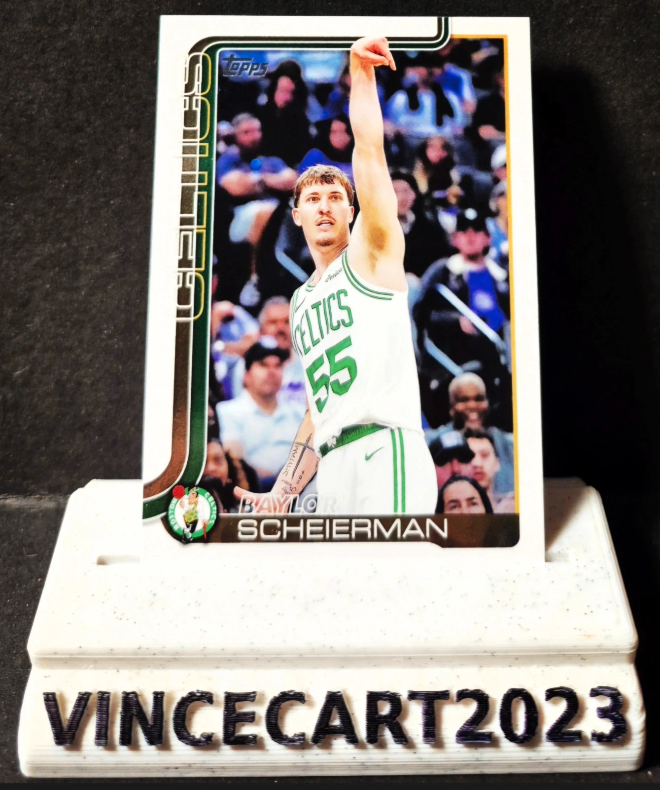

🏀 Carte NBA Baylor Scheierman – Topps Flagship 2024-25 #5 – Boston Celtics
1,0 €
Carte officielle Topps Flagship de Baylor Scheierman, forward des Boston Celtics ☘️
Super visuel en action, carte propre et bien conservée.
📌 Détails :
Joueur : Baylor Scheierman
Équipe : Boston Celtics
Saison : 2024-2025
Marque : Topps Flagship
Numéro : #5
Position : Forward
État : Excellent / Near Mint (sortie de pack, jamais jouée)
Carte non gradée
⭐ Jeune joueur intéressant dans une franchise mythique, parfait pour collection Celtics ou collection NBA actuelle.
📦 Envoi soigné
Disponibilité à confirmer sur Vinted.